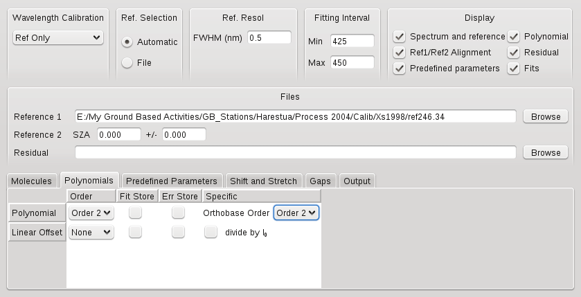
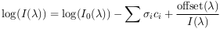
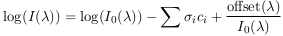

QDOAS Analysis Windows properties : Polynomial page

The degree of the polynomial fitting the continuous part of the spectra is specified in this page. The values of the fitted coefficients account for the normalization applied on both the spectrum and the reference. Differential cross sections can be generated by orthogonalisation of cross sections w.r.t. an orthogonal base constructed out of the polynomial components. Generally, a base of order 2 is used. The OrthoBase order column specifies the degree of this orthogonal base.
The correction of instrumental and/or atmospheric straylight or residual dark current signal requires the introduction of an offset parameter that is usually fitted as a non linear parameter in the Predefined Parameters page. In some specific cases (typically, in the near UV, around 300 nm), the signal of the spectrum is very low an d in order to avoid systematic logarithm errors in DOAS fitting when resolving the DOAS equation, the fit of a linearized offset is preferred. In this case, you can configure the order of the polynomial "offset(λ)" in the equation

There is also the option to fit a polynomial divided by I0 (solar irradiance when it is available, otherwise the current reference spectrum) as a "linearized offset". This option can be enabled using the checkbox "divide by I0". In that case, the fitting equation becomes

Note that a linear offset and a non linear offset should not be fitted in the same spectral analysis window.